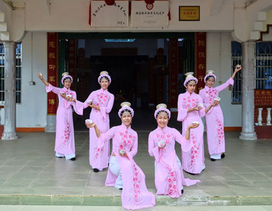

灯舞

灯舞是京族特色舞蹈，在哈族的哈节的后两日表演。是一种宗教舞蹈，表演时4—8名姑娘身着白色长衫，黑色长裤，头上和手上都置有盘碟，盘碟上竖有点燃的蜡烛，舞者随着鼓点节奏的快慢而翩翩起舞，同时转动手腕，纵横交错的穿插，烛光与白衣相辉映，构成多姿多彩、优雅动人的画面。
该舞蹈是在继续"坐梦"之后，四位着粉红色长衫的"桃姑"，将为"娱神"而表演《灯舞》。她们把立于小碟中的燃烛，分别顶于头上、托在掌心，在鼓乐伴奏声中穿梭起舞于神案前。舞蹈动作集中在两臂和手腕部，上身挺拔、双膝微屈，整个舞队的圆场步尤若行云流水般地飘逸，而双双转动的手灯，似萤虫飞舞、流光四溢使人目不暇接。姑娘们的每一伸手、投足，无不体现着京族民众对神灵的崇敬、虔诚和对生活的热爱。这情景使人们不禁联想起京族古代有以"明烛祭神"和"昏夜引船返航"的习俗。《灯舞》的结束开启了亭内外人们与咏队歌声的闸门，如潮的歌声此起彼伏，还逐渐加入着由近及远的人声和笑声，形成一曲曲人间的祥和之音飘向广阔的夜空。